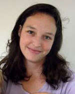
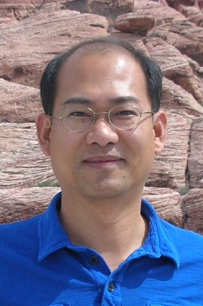
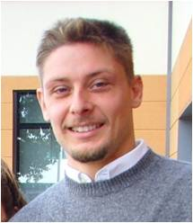
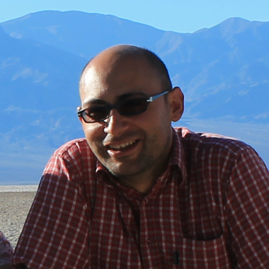
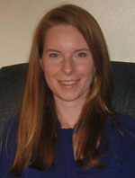
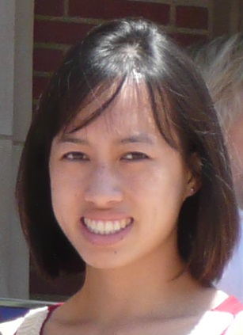
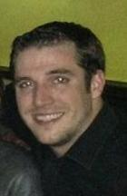

| Ivan Soltesz | |
| Professor and Chair |
| John Broderick (jbroderi at uci dot edu) | |
| Administrative Assistant to the Chair |
| Rose Zhu (rzhu at uci dot edu) | |
| Laboratory Technician |
| Cecilia Lozoya (celozoya at uci dot edu) | |
| Laboratory Technician |
Post-Doctoral Students
| Hannah Kim (hannahkk at uci dot edu) | |
| Cognitive Deficits in Epilepsy | |
| Hannah is interested in cognitive deficits associated with epilepsy and with epilepsy treatments. |
|  | Esther Krook-Magnuson (ekrookma at uci dot edu) |
| Diversity of Inhibition & Neuronal Networks | |
| Esther is interested in the diversity of inhibition in neuronal networks, including mechanisms of inhibition, cell type specificity, and interactions between networks . Her current projects use optogenetics to study epilepsy. |
|  | Sanghun Lee (sanghun dot lee at uci dot edu) |
| Cell-type specific organization of GABAergic microcircuits, endocannabinoids, epilepsy | |
| Sanghun studies how diverse GABAergic interneurons are connected with heterogeneous CA1 pyramidal neurons. |
|  | Ivan Marchionni (imarchio at uci dot edu) |
| Hippocampal Microcircuits and Epilepsy | |
| Ivan is interested in hippocampal microcircuits and epilepsy. |
| Mattia Maroso (mmaroso at uci dot edu) | |
| Hippocampal Microcircuits | |
| Mattia is interested in hippocampal microcircuits. |
|  | Gergely Szabo (gszabo at uci dot edu) |
| Hippocampal Microcircuits | |
| Gergely studies the role of distinct interneuron types of hippocampal circuitry in behaviorally relevant conditions. |
Graduate Students
|  | Marianne Bezaire (marianne dot case at uci dot edu) |
| Interneurons in the CA1 | |
| Marianne studies the functions of interneurons in the CA1 using a detailed, biologically realistic computer model. |
|  | Anh Bui (abui1 at uci dot edu) |
| Mossy Cells in Epilepsy | |
| Anh studies how changes in mossy cells during epilepsy affect the excitability of the dentate gyrus network. |
|  | Calvin Schneider (calvinjs at uci dot edu) |
| Computer Modeling of Epilepsy | |
| Calvin is constructing a computational model of the dentate gyrus to study the functional role of cell types within the dentate gyrus and their pathological changes observed in epilepsy. |
Alumni
- Csaba Varga (Post-doc)
- Caren Armstrong (Post-doc and doctoral student through 2011) now a Medical Student at University of California, Irvine
- Soo Yeun Lee (Doctoral student through 2011) now a Postdoctoral Fellow at Department of Bioengineering, Stanford University
- Sarah Feldt (Post-doc through 2011) now a Postdoctoral Fellow at Institut de Neurobiologie de la Mediterranee, Marseille, France
- Csaba Foldy (Post-doc and doctoral student through 2010) now a Postdoctoral Fellow at Department of Molecular and Cellular Physiology, Stanford University
- Kang Chen (Post-doc through 2009) now a Associate Specialist at Department of Neuroniology and Behavior, University of California, Irvine
- Janos Szabadics (Postdoc through 2009) now a Faculty at Central Medical Research Institute, Budapest, Hungary
- Robert J. Morgan (Doctoral student through 2009) now a Resident Psychiatrist at Rochester, MN
- Julio Echegoyen (Doctoral student through 2008) now a Resident Physician at Gavin Herbert Eye Institute University of California, Irvine
- Raphael Winkels (Visiting doctoral student through 2008) now a Postdoctoral Fellow at Institute of Clinical Neuroanatomy, Neuroscience Center, Goethe-University Frankfurt, Frankfurt, Germany
- Jonas Dhyrfjeld-Johnsen (Post-doc through 2007) now a Postdoctoral Student at Massachusetts General Hospital, Harvard University
- Axel Neu (Post-doc through 2007) now a Physician-scientist at Hamburg University
- Allyson Howard (Doctoral student through 2006) now a Resident Neurosurgeon at Stanford University
- Mykola Lysetskiy (Post-doc through 2005) now at Northwestern University
- Ildiko Aradi (Post-doc through 2003) now a Postdoctoral Fellow at Northwestern University
- Viji Santhakumar (Post-doc and doctoral student through 2003) now an Assistant Professor at New Jersey Medical School
- Anna de Hass Ratzliff (Doctoral student through 2003) now an Assistant Professor at Department of Psychiatry and Behavioral Sciences, University of Washington, Seattle
- Stephen Ross (Doctoral student through 2001) now a General Manager of Product and Marketing at Nikon Instruments USA, Inc.
- Niklas Thon (Doctoral student through 2001) (Visited from the University of Freiburg, Germany)
- Greg Hollrigel (Doctoral student through 1998) now an Attorney at Stout Uxa Buyan & Mullins LLP
- Zsolt Toth (Post-doc through 1997) now a Cardiac Surgeon at Department of Cardiac Surgery, Al-Dabbous Cardiac Center, Al-Adan Hospital